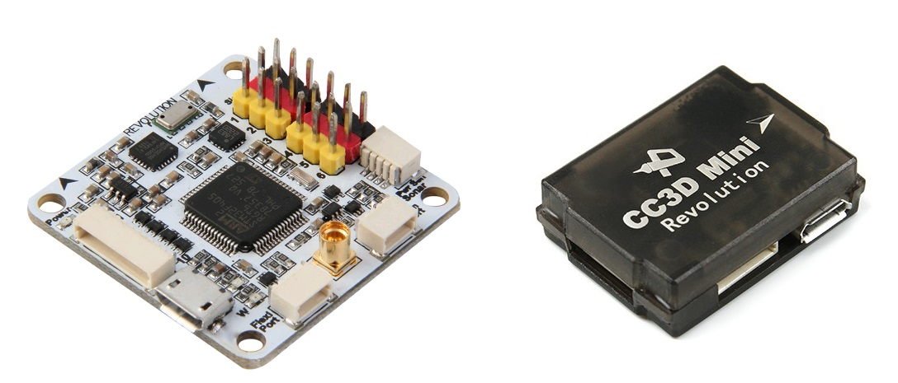
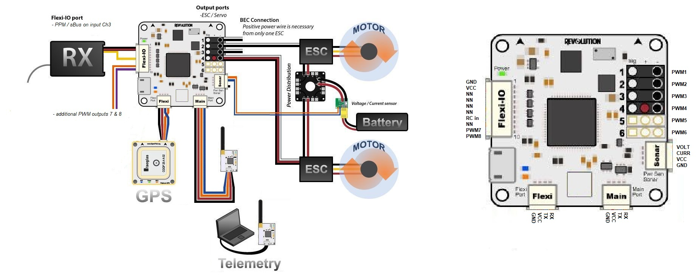
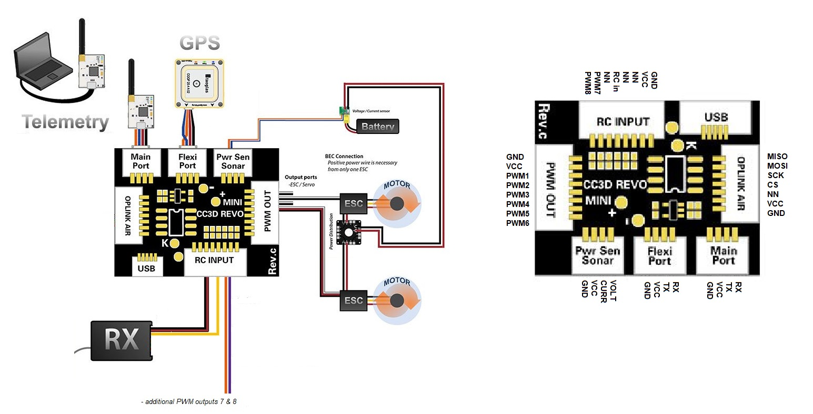
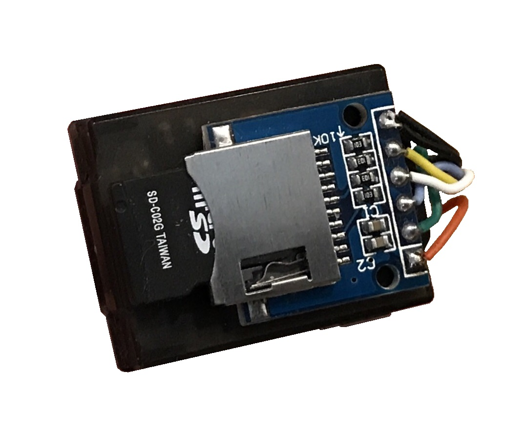
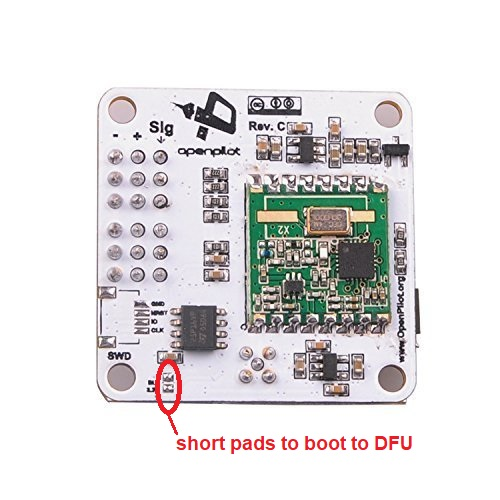
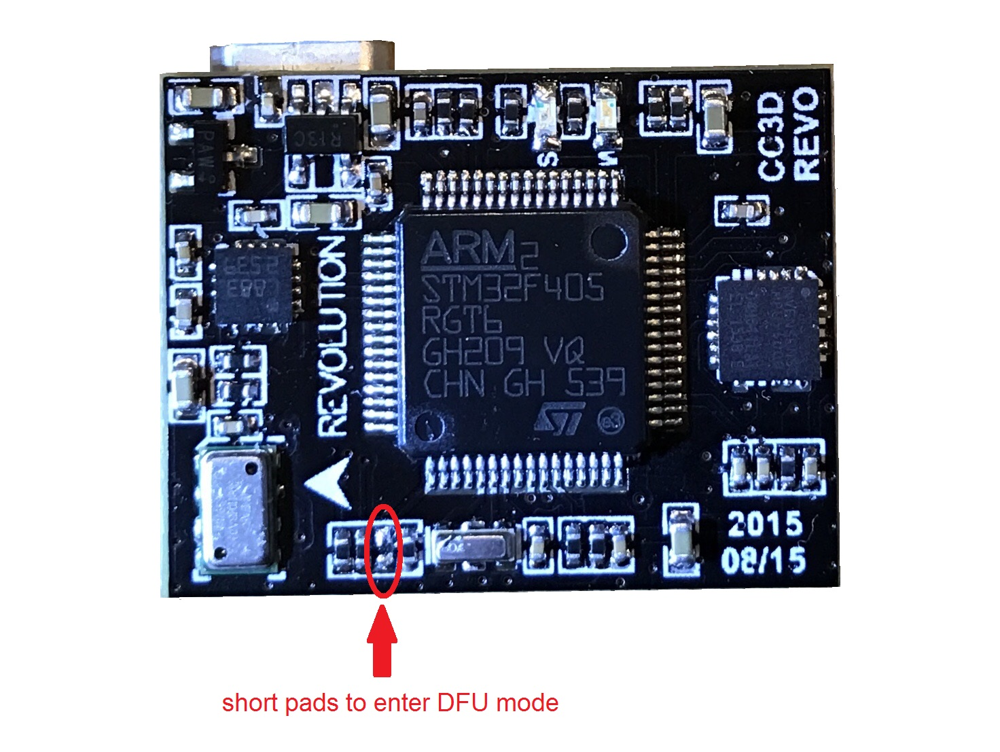

OpenPilot Revolution and RevoMini¶
{kind=link}
Images and some content courtesy of the LibrePilot wiki
Specifications¶
Processor
STM32F405RGT6 ARM Cortex-M4 microcontroller
168 Mhz/1 MB Flash
Sensors
InvenSense MPU6000 IMU (accel, gyro)
Honeywell HMC5883L compass
MS5611 barometer
Power
4.8V ~ 10V input power provided through ESC connection for fullsize Revolution
5V max on RevoMini
Default Interfaces
8 PWM outputs (1 - 6 on PWM output pins, 7 & 8 on Flex-IO / RCInput port)
RC input (requires PPM/sBus) on Flex-IO / RCInput port’s CH3 pin (yellow wire on fullsize revolution)
analog to digital inputs for battery voltage and current monitoring ( set pins 12,11 in params ), more adcs possible on arbitrary pins
GPS (SERIAL3) on Flexi Port
Telemetry (SERIAL1) on Mainport
USB (SERIAL0) port
SWD Port for flashing and debugging, including 3.3V output for optional peripherals
MMCX antenna connector for integrated HopeRF RFM22B 100mW 433MHz (fullsize Revolution only)
OPLink port on RevoMini. OPLink hardware is not supported by ArduPilot, but this port exposes external SPI pins (SCK, CS, MOSI, MISO) that can be used for supported SPI peripherals like SD card adapters or SPI OSD breakout boards (requires additions to hardware definition file and compiling a custom firmware).
Note
Per channel PWM-type RC inputs are not supported on this hardware. See reference for supported RC systems
Default UART order¶
SERIAL0 = console = USB
SERIAL1 = Telemetry1 = Mainport
SERIAL2 = NN in default config
SERIAL3 = GPS1 = FlexiPort
Tip
See hardware definition file for more info on pinout: https://github.com/ArduPilot/ardupilot/blob/master/libraries/AP_HAL_ChibiOS/hwdef/revo-mini/hwdef.dat
Wiring diagrams¶
ArduPilot default pin assignments on fullsize Revolution and RevoMini
 {kind=link}
{kind=link}
Optional connectivity¶
requires compiling custom firmware based on changes to hwdef
I2C on Flexi port
RevoMini’s OPLink port can be used for external SPI peripherals connection
arbitrary pins can be used for various connections like 2nd GPS, additional PWM outputs etc. within certain restrictions
The RevoMini likely is the smallest footprint autopilot hardware to support ArduPilot. It does not offer CAN bus connectivity or sufficient onboard memory for storage of relevant logging data. However, external I2C or SPI peripherals can be added with limited effort.
{kind=link}
Where to Buy¶
Available from many retailers including HobbyKing.
Firmware handling¶
ArduPilot supports Revolution and RevoMini in Stable releases. Firmware files can be found here
First time flashing ArduPilot requires to boot your device in DFU mode to flash an ArduPilot compatible bootloader and firmware file.
Enter DFU Mode¶
To do this, you’ll need to locate and short two pads on the device. On fullsize Revolution they are designated as “SB” or “SBL”:
{kind=link}
On RevoMini they are located here:
{kind=link}
You can short the pads in any particular way (either with a wire, solder joint, or something else). Detailed instructions are available on the Revo Mini LibrePilot Wiki. A small wire is the easiest way to short the device. You can also power the device via USB first, and then short the pads if using a wire. Once you have the device in DFU mode and connected to your machine continue with the following steps to load ArduPilot firmware onto ChibiOS boards.
Compile ArduPilot¶
To build your own firmware, see the instructions on setting up a build environment and compiling the source code: Building the Code
[copywiki destination=”plane,copter,rover,blimp”]